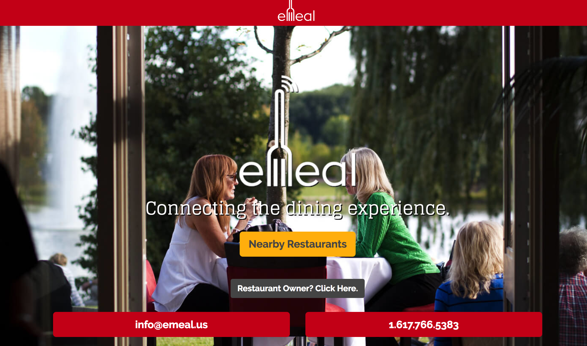
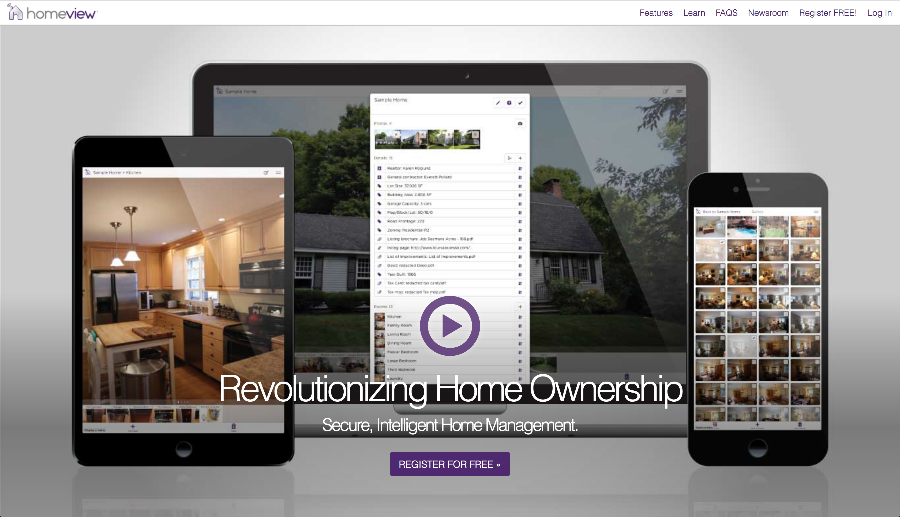
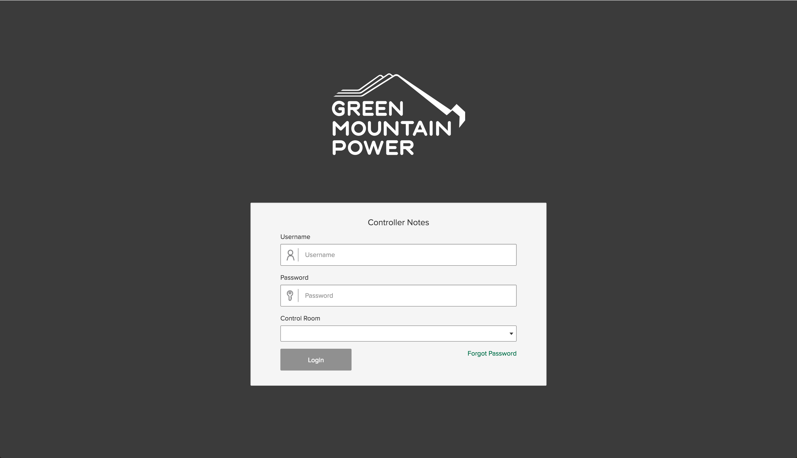

Keenan
Villani-Holland

i make software.
Portfolio

- Localvore
- Built and maintained a site redesign.
- Single page app using Laravel for the API and Backbone.js for the frontend.
- Helped coordinate development and delivery as project anchor.

- Green Mountain Power
- Maintained and developed a custom Wordpress theme, including custom plugin development and extensive use of Advanced Custom Fields.
- Refactored legacy build system in order to streamline it an provide support for ES6.
- Implemented designs by and external design team.
- Helped coordinate development, delivery and project planning as project anchor.
- 
- eMeal
- Developed a single page app using Laravel for the APP and Backbone.js for the frontend.
- Built integration with Omnivore.io to connect the eMeal to POS systems in restaurants.
- 
- HomeView
- Built using React and Redux.
- Assisted with complete rewrite of the app, using an existing API.
- Brought the rewrite to feature parity with the legacy app.
- 
- Green Mountain Power Controller
- Maintained and extended internal tools for Green Mountain Power.
- Built with Angular.

- EstateAlerts
- Assisted with various bugs and improvements on both the backend (Laravel) and front-end (React, Redux).
- Extensive debugging of the automated alert system built with Laravel and AWS (using SNS and Lambda).

- DC Greens
- Helped build an admin dashboard using React and Redux.
- Helped maintain the API built with Laravel.
- Worked on the Android app, built with Cordova.

- WildFire
- Built the first version of the API using Node, Express and AWS DynamoDB.
Skills
These are the tools I’m most familiar with, but learning new ones isn’t an issue!
Amazon Web Services (Elastic Compute Cloud, EC2 Container Service, RDS, Lambda, Simple Email Service, API Gateway), Docker, Git, PHP (Laravel, Dingo), JavaScript (Node, React, Redux, Angular), Wordpress, Python, MySQL, Java, Ruby, HTML, CSS (Less, Sass)